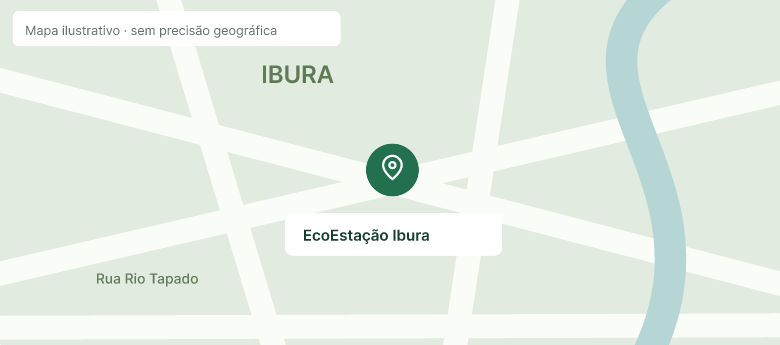

Início / Coleta e descarte
O destino certo começa com informação.
Saiba quando colocar o lixo na rua e como encaminhar cada tipo de resíduo.
ACESSO SEM LOGIN
Informação para cuidar de todo o bairro.
Quando a coleta passa na sua rua?
Busque pelo nome da rua ou pela localidade no Ibura.
Rua ou localidade
Exemplos: Rua Rio Tapado · Rua Rio Prado · Três Carneiros
Os dias, horários e a data de atualização aparecerão após a consulta.
Nesta apresentação, as rotas oficiais ainda não estão disponíveis.
PEQUENOS CUIDADOS
A coleta começa em casa.
Embale bem os resíduos
Use sacos resistentes e bem fechados.
Proteja quem faz a coleta
Embale e identifique objetos cortantes.
Respeite o dia e o horário
Evite deixar sacos expostos na calçada.
PONTOS DE DESCARTE
Um lugar certo para o que não vai na coleta.
Encontre um ponto no bairro e confira as condições de entrega antes de sair.
Filtrar por resíduo
1 ponto apresentado
ECOESTAÇÃO
EcoEstação Ibura
Rua Rio Tapado · Ibura, Recife / PE
Antes de ir
Confirme os materiais aceitos, os limites de entrega e os
horários de funcionamento nos canais oficiais da Emlurb.

GUIA DE DESCARTE
Cada resíduo tem o seu caminho.
Separe os materiais em casa e evite que eles cheguem às ruas, aos bueiros e aos canais.
Resíduos domésticos
Coloque os rejeitos em sacos bem fechados.
Separe os recicláveis antes de descartar.
DESTINO
Coleta domiciliar, no dia e horário da rua
Recicláveis
Separe papel, plástico, metal e vidro.
Mantenha as embalagens limpas e secas.
DESTINO
Coleta seletiva ou ponto de recebimento
Entulho de pequenas obras
Não deixe restos de obra na calçada.
Confirme os limites de entrega do ponto.
DESTINO
Ponto autorizado para receber entulho
Móveis e volumosos
Não abandone sofás, colchões e móveis.
Consulte a destinação antes de transportar.
DESTINO
Recolhimento ou ponto autorizado
Eletrônicos e pilhas
Separe dos resíduos domésticos. Procure
um ponto específico para esse material.
DESTINO
Logística reversa ou ponto especializado
Óleo de cozinha usado
Espere esfriar e guarde em garrafa fechada.
Nunca despeje na pia, no solo ou no canal.
DESTINO
Ponto de recebimento de óleo usado
Não misture produtos químicos, pilhas ou eletrônicos aos resíduos da coleta comum.
AINDA TEM DÚVIDAS?
Descarte consciente,
sem complicação.
Informação clara para ajudar
você a fazer a escolha certa.
A EcoEstação recebe qualquer tipo de resíduo?
Não. Confirme os materiais aceitos e os limites de entrega com a Emlurb.
Pilhas, eletrônicos e produtos químicos exigem destinação específica.
Posso colocar o lixo na rua a qualquer hora?
Coloque os sacos próximos do horário previsto para a coleta da sua rua.
Isso reduz o mau cheiro, a presença de animais e o lixo espalhado.
O que fazer se encontrar resíduos em um canal?
Registre uma denúncia e indique que o descarte está em um canal.
Não entre na água nem toque em materiais desconhecidos.
Viu descarte irregular no bairro?
Ajude a cuidar do Ibura: registre o local e acompanhe o atendimento.